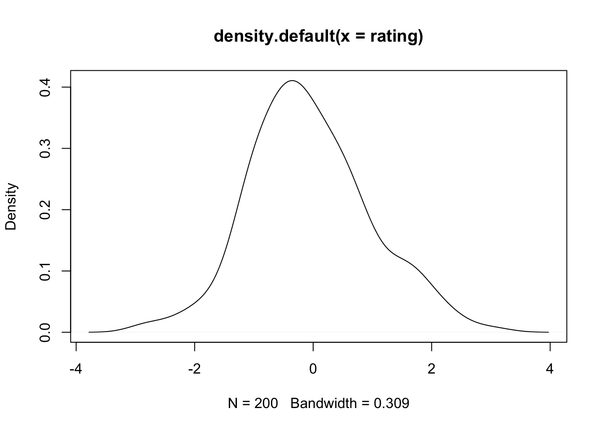
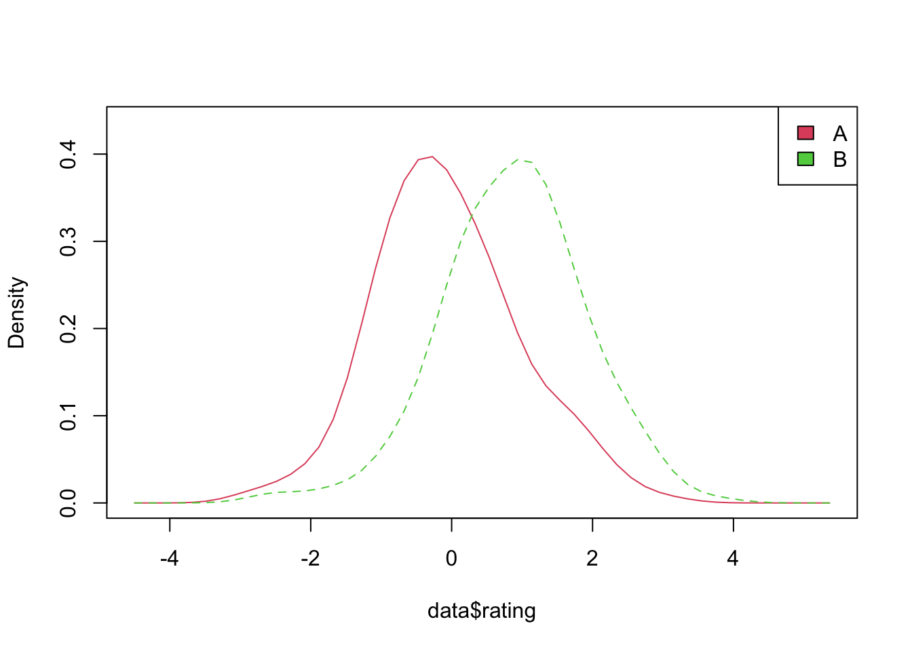
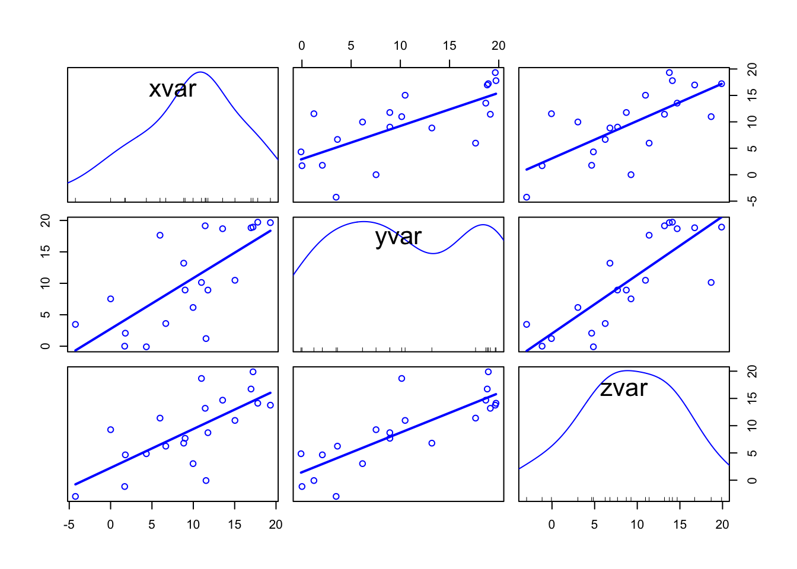
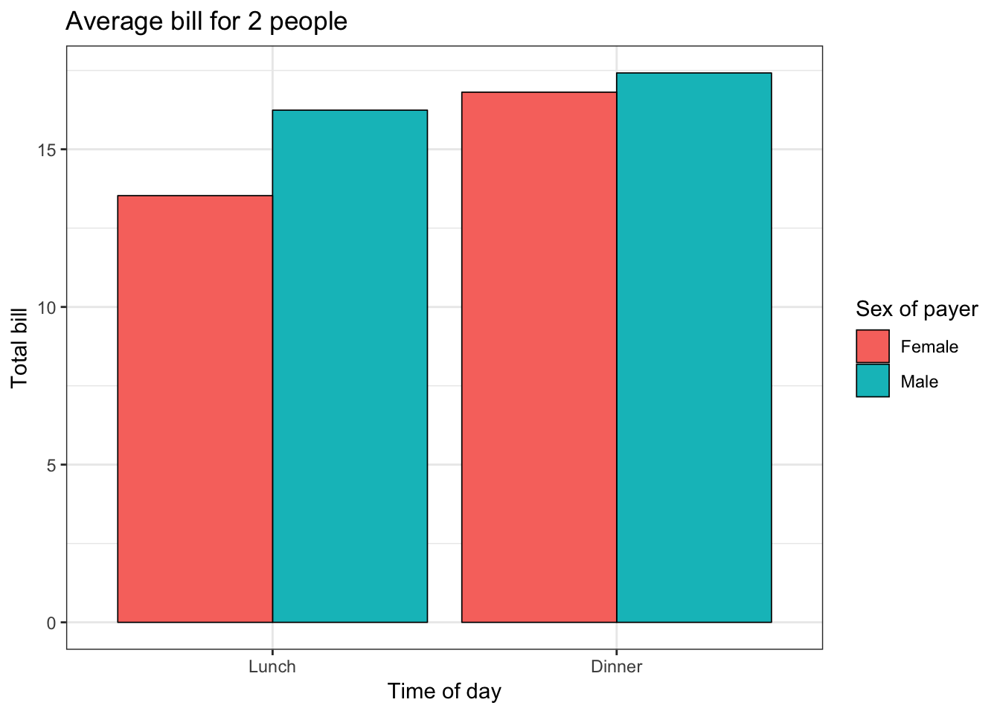
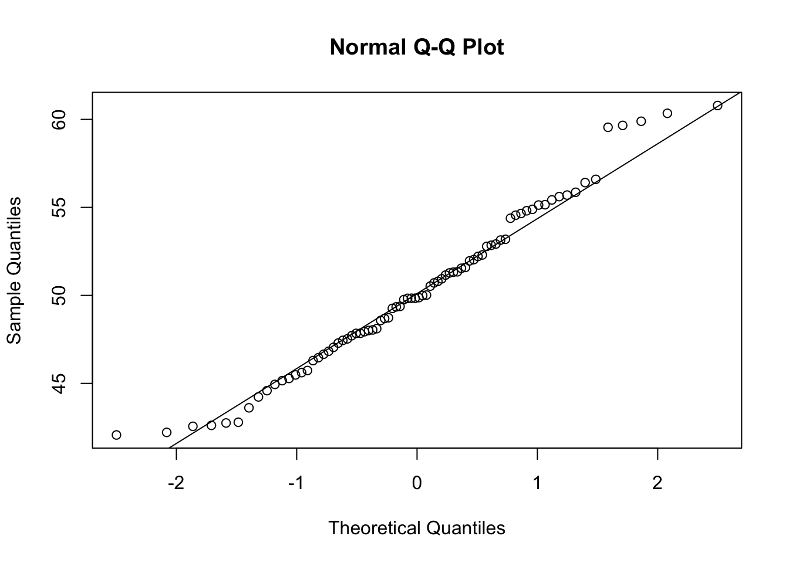

第 8 章 标准绘图
8.1 直方图和密度图
8.1.1 问题
你想要绘制一个直方图或密度图。
8.1.2 方案
样例数据：两个分别包含200个数据点的向量：
set.seed(1234)
rating <- rnorm(200)
head(rating)
#> [1] -1.2071 0.2774 1.0844 -2.3457 0.4291 0.5061
rating2 <- rnorm(200, mean = 0.8)
head(rating2)
#> [1] 1.2852 1.4968 0.9855 1.5007 1.1117 1.5605当可视化含多个组别的数据时，一些绘图方法通常需要一个数据框：一列给分组变量，一列给测量值。
# 创建一列用于显示数据的组别
cond <- factor(rep(c("A", "B"), each = 200))
data <- data.frame(cond, rating = c(rating, rating2))
head(data)
#> cond rating
#> 1 A -1.2071
#> 2 A 0.2774
#> 3 A 1.0844
#> 4 A -2.3457
#> 5 A 0.4291
#> 6 A 0.5061
# 直方图
hist(rating)
# 使用8个箱子（这仅仅是近似 -
# 它会把边界放在一个比较好的近似值上）
# 让箱子呈现淡蓝色 #CCCCFF
# 相比于计数，这里让面积为1，即显示比例(freq=FALSE)
hist(rating, breaks = 8, col = "#CCCCFF", freq = FALSE)
# 每0.6一个刻度
boundaries <- seq(-3, 3.6, by = 0.6)
boundaries
#> [1] -3.0 -2.4 -1.8 -1.2 -0.6 0.0 0.6 1.2 1.8 2.4
#> [11] 3.0 3.6
hist(rating, breaks = boundaries)
# 核密度图
plot(density(rating))
8.1.2.1 多个组别的核密度图
代码来自： http://onertipaday.blogspot.com/2007/09/plotting-two-or-more-overlapping.html
plot.multi.dens <- function(s) {
junk.x = NULL
junk.y = NULL
for (i in 1:length(s)) {
junk.x = c(junk.x, density(s[[i]])$x)
junk.y = c(junk.y, density(s[[i]])$y)
}
xr <- range(junk.x)
yr <- range(junk.y)
plot(density(s[[1]]), xlim = xr, ylim = yr, main = "")
for (i in 1:length(s)) {
lines(density(s[[i]]), xlim = xr, ylim = yr, col = i)
}
}
# 下面函数的输入必须是一个数值列表
plot.multi.dens(list(rating, rating2))
sm 包也引入了一种绘制多个密度图的方式，输入数据必须是数据框。
library(sm)
#> Warning in fun(libname, pkgname): couldn't connect to
#> display ":0"
#> Package 'sm', version 2.2-5.6: type help(sm) for summary information
sm.density.compare(data$rating, data$cond)
# 添加一个图例 (颜色编号从2往上升)
legend("topright", levels(data$cond), fill = 2 + (0:nlevels(data$cond)))
8.2 散点图
8.2.1 问题
你想要创建一个散点图。
8.2.2 方案
假设下面是你的数据：
set.seed(955)
# 给数据添加一些随机噪声
dat <- data.frame(xvar = 1:20 + rnorm(20, sd = 3), yvar = 1:20 +
rnorm(20, sd = 3), zvar = 1:20 + rnorm(20, sd = 3))
head(dat)
#> xvar yvar zvar
#> 1 -4.252 3.47316 -2.97807
#> 2 1.702 0.00594 -1.16183
#> 3 4.323 -0.09425 4.85517
#> 4 1.781 2.07281 4.65079
#> 5 11.537 1.21544 -0.06614
#> 6 6.672 3.60811 6.243508.2.2.1 基本的散点图
# 使用向量 xvar 和 yvar 绘制点图
plot(dat$xvar, dat$yvar)
# 跟上一句代码一致，但这里是用公式实现
plot(yvar ~ xvar, dat)
# 添加一条回归线
fitline <- lm(dat$yvar ~ dat$xvar)
abline(fitline)
8.2.2.2 散点图矩阵
如果你想要比较多个变量，可以创建一个散点图矩阵。
# 一个散点图矩阵
plot(dat[, 1:3])
# 添加回归线
# 在对角添加histogram/boxplot/density/qqplot
library(car)
#> 载入需要的程辑包：carData
scatterplotMatrix(dat[, 1:3], diagonal = "histogram", smooth = FALSE)
#> Warning in applyDefaults(diagonal, defaults =
#> list(method = "adaptiveDensity"), : unnamed diag
#> arguments, will be ignored
想要查看对应的相关矩阵，查看回归和相关分析。
想要可视化相关矩阵，查看相关矩阵。
8.3 箱线图
8.3.1 问题
你想要绘制一个箱线图。
8.3.2 方案
该方案教你如何快速地使用标准绘图方法绘制简单的箱线图。
这里的例子使用 ToothGrowth 数据集，它有两个独立变量以及一个依赖变量。
head(ToothGrowth)
#> len supp dose
#> 1 4.2 VC 0.5
#> 2 11.5 VC 0.5
#> 3 7.3 VC 0.5
#> 4 5.8 VC 0.5
#> 5 6.4 VC 0.5
#> 6 10.0 VC 0.5在不同 supp 和 dose 条件下，变量 len 的箱线图:
boxplot(len ~ supp, data = ToothGrowth)
# 即使 `dose` 是一个数值型变量，`boxplot`
# 也会将其转换为因子
boxplot(len ~ dose, data = ToothGrowth)
组合 supp 和 dose 不同水平（即交互项）下 len 的箱线图
boxplot(len ~ interaction(dose, supp), data = ToothGrowth)
注意 plot() 除了添加了横轴标签和不会自动将数值变量转换为因子变量，它与 boxplot() 有非常相似的输出。
plot(len ~ interaction(dose, supp), data = ToothGrowth)
8.4 QQ 图
8.4.1 问题
你想要对你自己的数据分布与其他的分布进行比较。这常用语检查是否一个样本是否服从正态分布，以及两个样本是抽取自同一分布。
8.4.2 方案
假设这是你的数据：
set.seed(183)
# 正态分布的数值
x <- rnorm(80, mean = 50, sd = 5)
# 均匀分布的数值
z <- runif(80)
# 比较用rnorm()抽样的数据分布与正态分布的差异
qqnorm(x)
qqline(x)
# 比较数据的4次幂分布与正态分布的差异
qqnorm(x^4)
qqline(x^4)
# 比较均匀分布抽取的数据与正态分布的差异
qqnorm(z)
qqline(z)